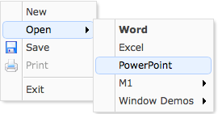

Menu
Override defaults with $.fn.menu.defaults.
The menu is usually used for context menus. It is the base component for building other menu component such as menubutton and splitbutton. It also can be used for both navigation and executing commands.
Usage Example
Create Menu
Create menu via markup should add 'easyui-menu' class to <div/> markup. Each menu item is created via <div/> markup. We can add 'iconCls' attribute to menu item to define a icon that will display on left of menu item. Add 'menu-sep' class to menu item will generate a menu seperator.
Create menu programatically and listening the 'onClick' event.
Show Menu
When menu is created, it's hidden and not visible. Call 'show' method to display menu.
Menu Item
The menu item represents an individual item that is displayed within a menu. It contains the following properties:
| Name | Type | Description | Default |
|---|---|---|---|
| id | string | The id attribute of menu item. | |
| text | string | The item text. | |
| iconCls | string | A CSS class to display a 16x16 icon on item left. | |
| href | string | Set page location while clicking the menu item. | |
| disabled | boolean | Defines if to disable the menu item. | false |
| onclick | function | The function to be called while clicking the menu item. |
Menu Properties
| Name | Type | Description | Default |
|---|---|---|---|
| zIndex | number | Menu z-index style,increase from it. | 110000 |
| left | number | Menu left position. | 0 |
| top | number | Menu top position. | 0 |
| align | string | The menu alignment, possible values are 'left' or 'right'. Available since version 1.4.2. | left |
| minWidth | number | The minimum width of menu. Available since version 1.3.2. | 120 |
| itemHeight | number | The menu item height. Available since version 1.4.2. | 22 |
| duration | number | Defines duration time in milliseconds to hide when the mouse leaves the menu. Available since version 1.4. | 100 |
| hideOnUnhover | boolean | When true, automatically hides the menu when mouse exits it. Available since version 1.3.5. | true |
| inline | boolean | True to stay inside its parent, false to go on top of all elements. Available since version 1.4.2. | false |
| fit | boolean | True to set the menu size fit it's parent container. Available since version 1.4.2. | false |
Menu Events
| Name | Parameters | Description |
|---|---|---|
| onShow | none | Fires after menu is showed. |
| onHide | none | Fires after menu is hidden. |
| onClick | item |
Fires when the menu item is clicked.
The example below shows how to process all menu item clicking:
<div class="easyui-menu" data-options="onClick:menuHandler" style="width:120px;">
<div data-options="name:'new'">New</div>
<div data-options="name:'save',iconCls:'icon-save'">Save</div>
<div data-options="name:'print',iconCls:'icon-print'">Print</div>
<div class="menu-sep"></div>
<div data-options="name:'exit'">Exit</div>
</div>
<script type="text/javascript">
function menuHandler(item){
alert(item.name)
}
</script>
|
Menu Methods
| Name | Parameter | Description |
|---|---|---|
| options | none | Return the options object. |
| show | pos | Show a menu on specified position. pos parameter have two properties: left: the new left position. top: the new top position. |
| hide | none | Hide a menu. |
| destroy | none | Destroy a menu |
| getItem | itemEl |
Get the menu item properties that include a 'target' property indicating the item DOM element.
The example below shows how to get the specified item by id:
<div id="mm" class="easyui-menu" style="width:120px"> <div>New</div> <div id="m-open">Open</div> <div>Save</div> </div>
var itemEl = $('#m-open')[0]; // the menu item element
var item = $('#mm').menu('getItem', itemEl);
console.log(item);
|
| setText | param |
Set the specified menu item text. The 'param' parameter contains two properties: target: DOM object, the menu item to be setted. text: string, the new text value. Code example:
var item = $('#mm').menu('findItem', 'Save');
$('#mm').menu('setText', {
target: item.target,
text: 'Saving'
});
|
| setIcon | param |
Set the specified menu item icon. The 'param' parameter contains two properties: target: DOM object, the menu item. iconCls: the new icon class. Code example:
$('#mm').menu('setIcon', {
target: $('#m-open')[0],
iconCls: 'icon-closed'
});
|
| findItem | text |
Find the specified menu item, the return object is same as the getItem method.
Code example:
// find 'Open' item and disable it
var item = $('#mm').menu('findItem', 'Open');
$('#mm').menu('disableItem', item.target);
|
| appendItem | options |
Append a new menu item, the 'options' parameter indicate the new item properties.
By default the added item will become a top menu item.
To append a sub menu item, a 'parent' property should be set to specify the parent item element that already has sub items.
Code example:
// append a top menu item
$('#mm').menu('appendItem', {
text: 'New Item',
iconCls: 'icon-ok',
onclick: function(){alert('New Item')}
});
// append a menu separator
$('#mm').menu('appendItem', {
separator: true
});
// append a sub menu item
var item = $('#mm').menu('findItem', 'Open'); // find 'Open' item
$('#mm').menu('appendItem', {
parent: item.target, // the parent item element
text: 'Open Excel',
iconCls: 'icon-excel',
onclick: function(){alert('Open Excel')}
});
|
| removeItem | itemEl | Remove the specified menu item. |
| enableItem | itemEl | Enable the menu item. |
| disableItem | itemEl | Disable the menu item. |
| showItem | itemEl | Show the menu item. Available since version 1.4. |
| hideItem | itemEl | Hide the menu item. Available since version 1.4. |
| resize | menuEl | Resize the special menu. Available since version 1.4. |